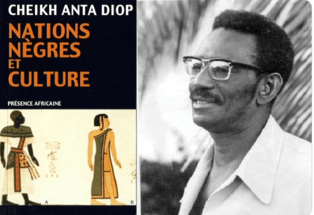

cheikh anta diop

Naissance à Caytou, dans la région de Djourbel au Sénégal
-
1923: Naissance à Diourbel (Sénégal)
- 1946: Obtention d'une bourse municipale pour aller faire des études en France
- 1947, Diop s'est engagé politiquement en faveur de l'indépendance des pays africains
et de la constitution d'un État fédéral en Afrique.
- 1950 et 1953, il est secrétaire général
- 1950 : Obtention de 2 certificats en Chimie : Chimie générale et chimie appliquée
des étudiants du Rassemblement démo1950 : Obtention de 2 certificats en Chimie
Chimie générale et chimie appliquéecratique africain
- 1953 : Mariage avec une française Louise Marie Maes dont il aura 4 fils
-
1954: Publication de Nations nègres et culture aux éditions Présence Africaine
- 1956 : Maitre auxiliaire en Physique-Chimie aux lycées Voltaire et Claude Bernard (Paris)
- 1960 IL obtient son doctorat en lettre
- 1960 : Soutenance à la Sorbonne de sa thèse de doctorat ès lettres
« Les domaines du patriarcat et du matriarcat dans l’antiquité
»
Publication aux Editions Présence africaine du livre : « Les fondements culturels,
techniques et industriels d’un futur État fédéral d’Afrique noire ».
- 1961: Retour au Sénégal et recrutement à l'Institut Fondamentald'Afrique noire où Diop
- 1962 : Emprisonnement 1 mois en raison de ses activités politiques et dissolution
de son parti par le gouvernement en 1963
dirigera le laboratoire de datation
carbone 14
- 1966: Réception au premier Festival des arts nègres
« l’écrivain qui a exercé la plus
grande influence sur la pensée nègre au XXe siècle »
- 1974: Organisation au Caire par l'Unesco,
à l'initiative de Cheikh Anta Diop, d'un
colloque international réunissant
les Egyptologues du monde entier. Recon-
naissance officielle des thèses de l'historien sénégalais
sur l'africanité du
peuplement de l'Egypte
- 1981 le titre de professeur
- 1986. Avec Théophile Obenga et Asante Kete Molefe,
il est considéré comme l'un des inspirateurs du courant épistémologique de l'afrocentricité.
Sa Famille
1986: Mort à Dakar